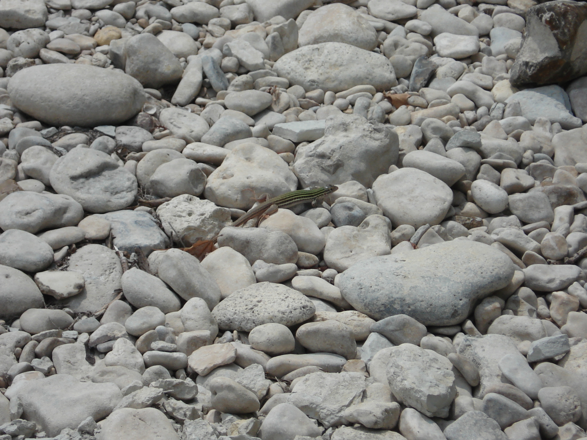

music appreciation
This is an archived post This is an archived post
Previous
Index
Next
i like posterous
March 17 2009, 12:57 AM
by alok thapa
ok, posterous doesn't seem bad at all.....

102 views and 1 response
Mar 17 2009, 2:41 AM
Garry Tan responded:
Thanks for trying us!